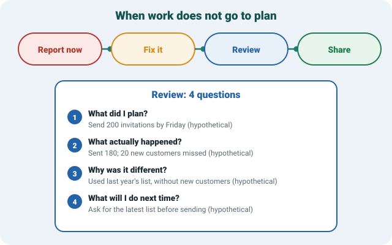

K6 · Adaptability and persistence › Level 3 Secure
When work does not go to plan, report it, fix it and learn from it
This lesson completes Sheet 5: Lessons-learned sheet. Print template. The inner side of dealing with failure (meditation, Stoicism) is on tamhonkhoe.com. Here we learn the work skill.
1. Objectives
- Report a mistake the same day: what went wrong, the impact, and how you are fixing it.
- Review what happened with 4 questions, and write down one new way of working to try.
2. Retrieval warm-up
- How is a quick fix different from a root fix?
- When you ask "Why?", should you ask about people or about the process?
Answers
- A quick fix contains the damage now. A root fix stops the problem coming back.
- About the process.
Review: Finding the root cause.
3. Explanation
In your first 90 days, you will sometimes get things wrong. Plans will also change halfway. What people remember is how you handle it afterwards.

1. Report it now. The sooner you report, the more ways there are to recover. Your message has 3 points: what went wrong, who is affected, what you are doing. A long apology is not needed.
2. Fix it. Do what you can straight away. Ask for help with the rest.
3. Review. Once things are stable, answer 4 questions:
Four review questions
- What did I plan?The expected result.
- What actually happened?With numbers if possible.
- Why was it different?Look at the method, not your character.
- What will I do next time?One specific action to try.
4. Share. If the lesson could help others, mention it briefly at a team meeting. Or propose adding a step to the process.
When the plan changes. A change is nobody's fault. But the steps are similar:
- Ask to understand why: "Is this because the client changed the brief?"
- Update Sheet 1: which tasks stop, which move, new deadlines.
- Tell anyone waiting on your results.
Keep quality under pressure. Time pressure tempts us to skip checks. Keep the final check, especially for tasks involving money or safety.
4. Workplace example
Hypothetical scenario. Yuki has worked for 7 weeks as an events assistant at a hotel. She sends invitations to a customer appreciation dinner. On Monday morning, her manager asks why a major customer has not received one.
Yuki checks and finds she used last year's list. 20 new customers were missed. Within 15 minutes, she messages her manager:
"I missed 20 new customers because I used the old list. The dinner is in 5 days. I'm sending all 20 invitations now, done before 11:00, and calling the 5 biggest customers. Is there anything else you need me to do?"
After the dinner, Yuki fills in Sheet 5 as in Figure 1. She proposes a new step: ask the sales team to confirm the list before sending. Her manager adds this step to the team's event checklist.
Why this works: Yuki reports the same day, with concrete actions. Her review looks at the method, so it produces a new step for the whole team.
5. Practice
Hypothetical scenario. You are a new accounts assistant at a construction company. You send a deposit to a supplier, but mistype one digit of the account number. The bank returns the payment after 2 hours. The supplier calls to ask why the money has not arrived.
Write a message to the chief accountant. Then answer the 4 review questions.
Hint 1
Your message needs 3 points: what went wrong, who is affected, what you are doing.
Hint 2
"What will I do next time?" should be a specific check, not "be more careful".
Model answer
Message: "The deposit to the steel supplier was returned because I mistyped one digit of the account number. The money is back in our account. I've called the supplier to apologise. I've set up the payment again. Could you approve it before 15:00 so they receive it today?"
Review:
- Planned: send the deposit in the morning.
- Actually: the payment bounced, and the supplier was paid about half a day late.
- Why: I typed the account number by hand and did not check it.
- Next time: copy the account number from the contract, and read it back in groups of 4 digits before sending for approval.
(The scenario is hypothetical. Follow your workplace's real payment procedure.)
6. Self-check
Choose an answer. Every option has an explanation.
Question 1. You realise you sent an old price quote to a customer. Which message is best?
-
Not quite. It apologises, but leaves out the impact and what you are doing to fix it.
-
Correct. Correct. It has all 3 points, a number, and shows you have fixed it.
-
Not quite. If the customer already used the old quote, your manager needs to know.
Question 2. Which answer fits the question "What will I do next time?"
-
Not quite. Too vague. Nobody can check whether you did it.
-
Correct. Correct. One specific step that can be done and checked.
-
Not quite. Avoiding the task does not help you improve, and is usually not realistic.
Question 3. Your team leader moves a project deadline one week earlier. What do you do first?
-
Correct. Correct. Understanding why helps you choose the right tasks to cut or move.
-
Not quite. It does not move the work forward, and it can affect the team mood.
-
Not quite. Skipping checks can cause bigger errors. Ask to cut the scope instead.
Question 4. When you answer "Why was it different?", where should you look?
-
Not quite. Blaming yourself does not show what to do differently.
-
Correct. Correct. A method can be changed, so next time the result is different.
-
Not quite. That may be partly true, but also look for the part you can change.
7. Reflection
- The last time you got something wrong, how long did you wait to report it? What would have changed if you had reported sooner?
- Is your answer to "What will I do next time?" specific enough for someone else to check?
8. Real-world application
In the next 7 days, choose something that did not go to plan, big or small. Fill in Sheet 5 with the 4 questions. Try the new method next time, then write the result at the bottom of the sheet.
9. Metadata
| skill | K6 · Adaptability and persistence |
|---|---|
| level | Level 3 · Secure |
| group | N3 |
| framework_map | WEF: Resilience, flexibility and agility; SkillsFuture CCS: Adaptability; LifeComp: P2 Flexibility (reference only) |
| original | Vietnamese version |
| updated | 2026-11-14 |
Finish the lesson
Mark it as done and the site suggests reviews after 1, 3 and 7 days. The data stays on your device only.
Suggested reviews: